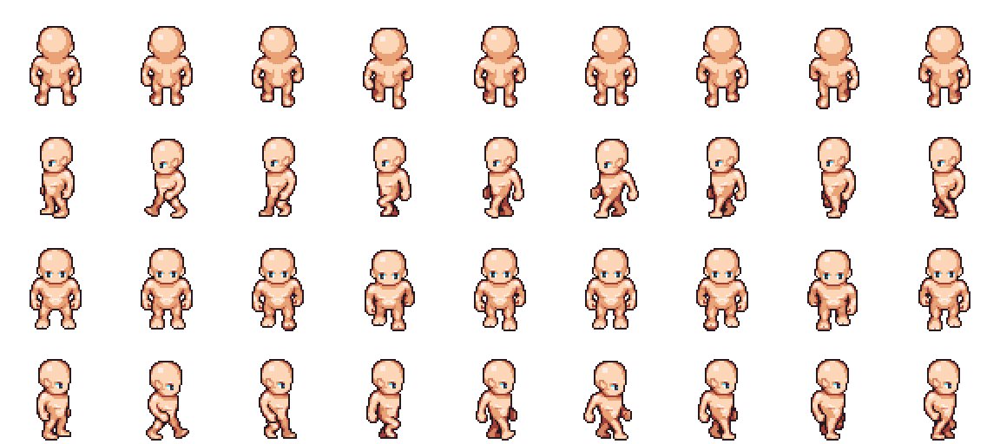

References / Illustration / 444
Liberated Pixel Cup base assets
The shared sprites and tiles of the 2012 Liberated Pixel Cup: one style guide, a 32-pixel grid, and openly licensed characters that hundreds of later free games reuse.
- Source
- OpenGameArt: Liberated Pixel Cup (LPC) Base Assets (sprites & map tiles)
- Creator
- Lanea Zimmerman (Sharm), Stephen Challener (Redshrike), Charles Sanchez (CharlesGabriel), Daniel Armstrong (HughSpectrum), and others listed in CREDITS.TXT
- Made
- 2012
- Style
- Pixel Art (agent-proposed, not yet reviewed by a person)
- Moods
- Game-like, handmade, nostalgic
- Evidence
- Downloaded
lpc_base_assets.zipfrom the OpenGameArt page and inspectedsprites/people/male_walkcycle.png(576 × 256 px, 12 colors) on white, enlarged 2× to 1152 × 512 px. Also inspected the page previewhouse_7.png(288 × 224 px) enlarged 4×. CREDITS.TXT gives the walk cycle to Stephen Challener. - Reviewed
- Rights
- Open license, stored. License: CC-BY-SA-3.0. Rights policy
Context
OpenGameArt describes these as “the base assets from the 2012 Liberated Pixel Cup competition” and lists the license as CC-BY-SA 3.0. OpenGameArt.
The attribution instructions say that the images are copyright their authors as listed in CREDITS.TXT, and that the assets by Lanea Zimmerman and Stephen Challener are also available under OGA-BY 3.0. OpenGameArt.
CREDITS.TXT gives the base tileset (including house.png) and much style-guide work to Lanea Zimmerman, the character templates (walk, hurt, slash, and spellcast sheets) to Stephen Challener, and the monsters to Charles Sanchez.
Observed
- Four rows of nine frames: the figure walks away, to the left, toward the viewer, and to the right.
- Each figure is about 32 pixels tall with a one-pixel dark brown outline, not black.
- Skin is shaded in three or four flat steps of peach and brown, with one pale highlight on the head. There is no gradient or anti-aliasing to the background.
- The side views swing the legs and arms between frames. The front and back views change only a few pixels per frame.
- The house tiles in the page preview use red brick, gray stone, and wood in the same flat-step shading, seen from a high three-quarter view.
Why it belongs
The base assets show the 16-bit end of the style: more colors per sprite and colored outlines, but still whole square pixels, hand placement, and a frame-by-frame walk.
A shared style guide let many artists produce compatible sprites, which shows how a fixed grid and palette make pixel art a system.
Borrow
Outline sprites with a dark shade of their own color, not pure black.
Animate a character with a short cycle of frames on a fixed cell, with no tweening.
Measured
Machine-extracted by tools/image-traits.py on . Full measurement.
- Mean chroma
- 0.06
- Palette
- #ffffff 75%
- #fdd5b7 6%
- #efb794 2%
- #eaa378 1%
- #77605e 1%
- #6b4b49 1%
- #f3f3f3 1%
- #683633 1%

